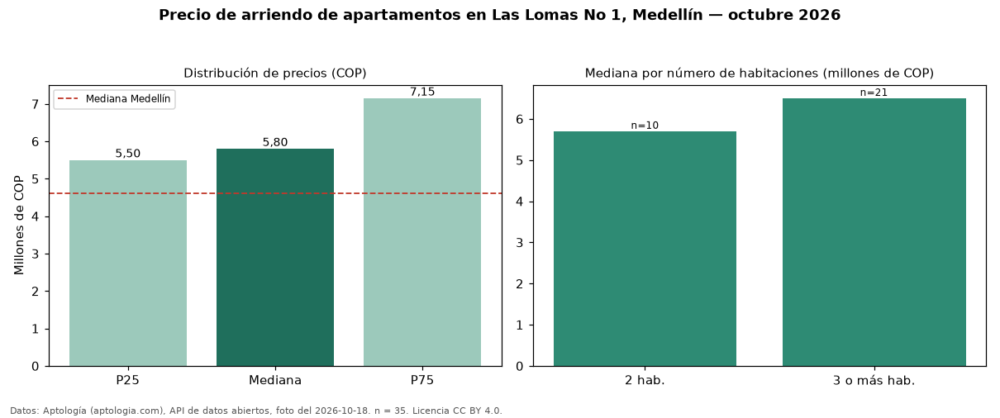

Precio de arriendo de apartamentos en Las Lomas No 1, Medellín — octubre 2026
Con 35 avisos vigentes, el canon mediano de apartamentos en arriendo en Las Lomas No 1, Medellín es COP 5.800.000 al mes. Eso la ubica 26 % por encima de la mediana de Medellín para apartamentos (COP 4.600.000). Con la mediana de venta del mismo barrio (COP 1,25 mil millones), el arriendo anual equivale a 5,6 % del precio de venta: una aproximación gruesa a la rentabilidad bruta, porque compara medianas de ofertas distintas. El segmento con más oferta es el de 3 o más habitaciones (21 avisos, mediana COP 6.500.000); pasar de 2 habitaciones a 3 o más habitaciones sube la mediana 14 %. 91 % de los avisos incluye parqueadero, y su mediana (COP 5.900.000) es prácticamente igual a la general. Por mediana, es el puesto 27 de 97 barrios de Medellín con al menos 30 avisos de apartamentos en arriendo: en la franja media. El aviso más barato pide COP 3.600.000 y el más caro COP 9.000.000. Datos: Aptología (aptologia.com), API de datos abiertos, licencia CC BY 4.0 — https://www.aptologia.com/arriendo/medellin/las-lomas-no-1. Archivos: PDF de 2 páginas, CSV con las cifras y gráfica PNG.

| Avisos únicos | 35 |
|---|---|
| Percentil 25 | COP 5.500.000 |
| Mediana | COP 5.800.000 |
| Percentil 75 | COP 7.150.000 |
Fuente: avisos vigentes de portales inmobiliarios recopilados por Aptología, deduplicados (mínimo 30 avisos únicos por celda). Precios pedidos, no cerrados. Fecha: 2026-10-18.